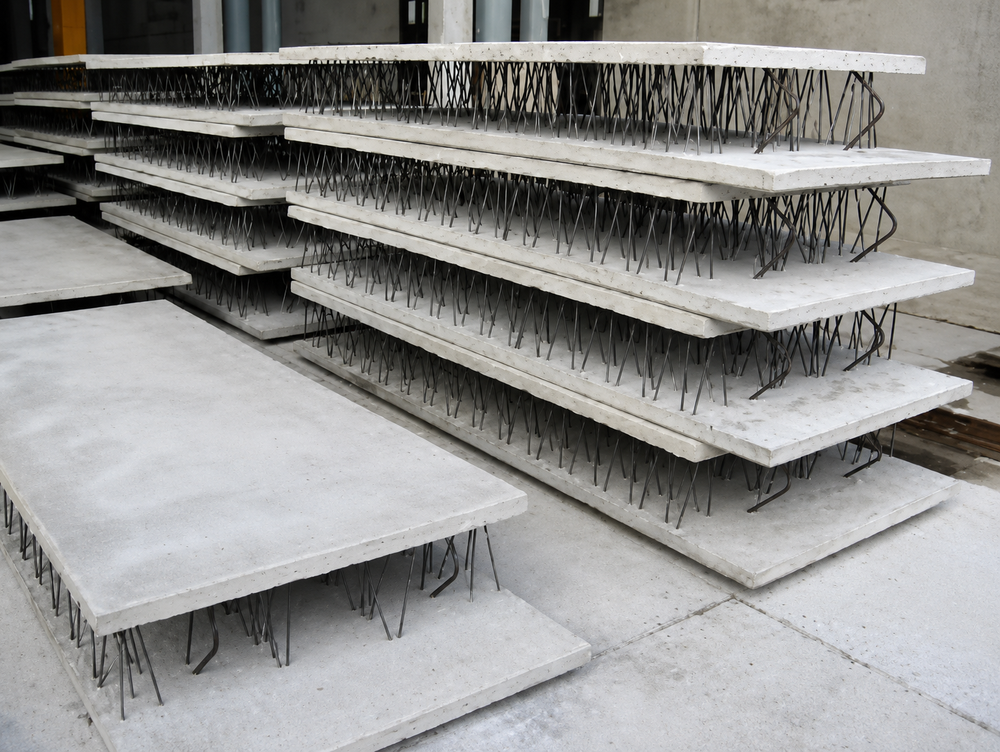
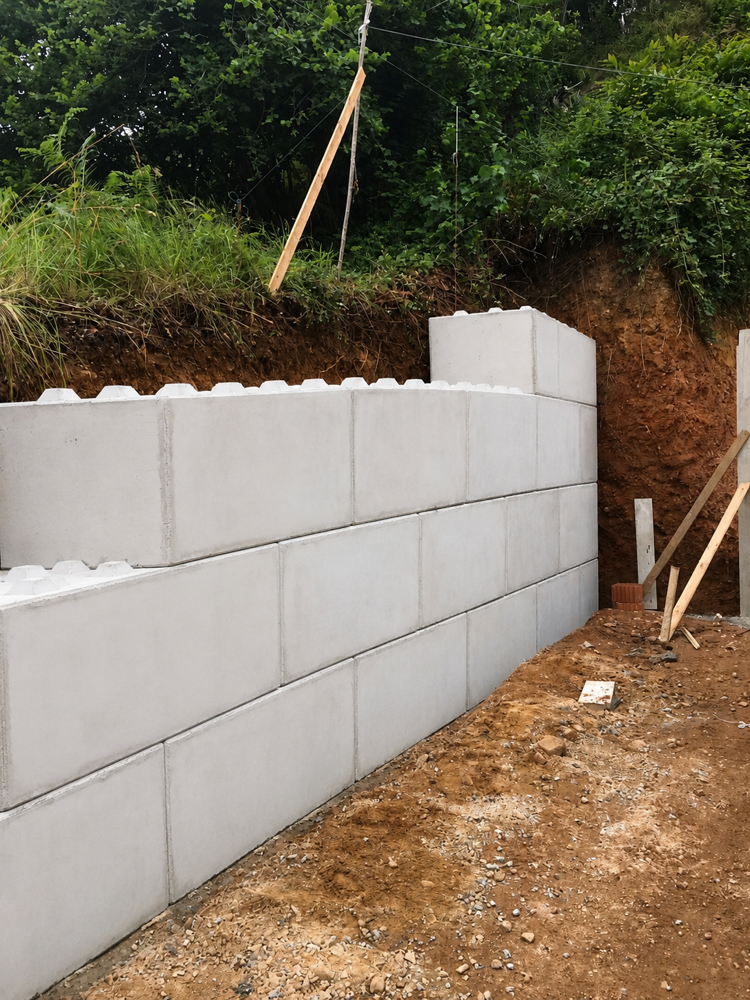

← Volver a productos


Contención y drenaje
Elementos de contención
Soluciones prefabricadas para contención de graneles y terrenos, con alta resistencia y un comportamiento fiable en obra.
Función
Contención de terreno
Diseño
Adaptado a geotecnia
Aplicación
Infraestructura y urbanismo
Durabilidad y seguridad
Diseñados para soportar cargas y condiciones de servicio exigentes, garantizando estabilidad y bajo mantenimiento.
- Soluciones para drenaje y canalización.
- Muros dobles tipo sándwich para contencion de tierra o cimentaciones de diferentes anchos y longitudes.
- Muros tipo "L" o "T" para almacenamiento de graneles
- Piezas tipo "Lego" remontables para montaje de muro. Dimensiones 1.60 x 0.80 x 0.80 o 0.80 x 0.80 x 0.80.
Aplicaciones habituales
Aplicables en muros de contención, taludes, obras civiles y sistemas de protección de terraplenes.
Silos de almacenamiento de graneles tipo zanja.
Cimentaciones.

